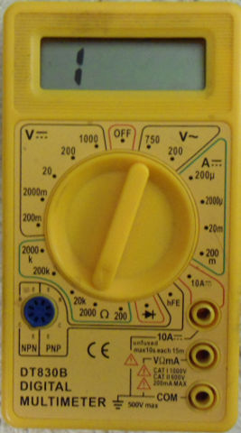

Hi, I want to follow this tutorial :
http://openenergymonitor.org/emon/buildingblocks/how-to-build-an-arduino...
so I buy this current transform SCT-013-000
Now I'm testing this sensor with a multimeter , so I set multimeter for measure voltage, and plug two cables of SCT-013-000 with multimeter cables, something like shown in this video :
https://www.youtube.com/watch?v=IHozA4Ds5Ts&feature=youtu.be
but I see always 0 V, nothing change, so I think my sensor doesn't work. I buy it on openenergymonitor shop :(
Re: Problem with current transform SCT-013-000
(Didn't watch the video - blocked to me.) The clue is in the name - CURRENT transformer. You must set your meter to read 50 mA ac, and put your CT on a single core cable, to read anything. The connections on the plug are tip and sleeve, there is no connection to the ring. If you put the CT on a twin-core or three-core cable, it does not work. It should look like this:
Re: Problem with current transform SCT-013-000
https://m.youtube.com/watch?v=IHozA4Ds5Ts&feature=youtu.be
same link for mobile.
I do same thing shown in video, I link a lamp with a twin-core cable, split cable and put CT on phase then connect CT output cables in multimeter. As shown in the video multimeter is set to read Vac and value grows when turn on a lamp . Same not work to me. I can't read 50 mA ac becouse my multimeter can read only digital and analogic Voltage and digital current .
But I plug CT in Arduino following tutorial of CT only measurement with same bad result
Re: Problem with current transform SCT-013-000
The CT is rated at 100 A. If you are using a lamp rated at maybe 60 W ( = 250 mA), you should expect to see only 125 μA. The CT gives you an ALTERNATING CURRENT output.
Can you measure resistance with your meter? If you can, you should measure approximately 100 Ω between Tip and Sleeve of your plug.
[The photo shows a temperature sensor wiring. You will have a white wire to the Tip and a red wire to the Sleeve. There is no connection to the Ring.]
"digital and analogic Voltage and digital current"


I think you mean "direct" and "alternating" there:
Re: Problem with current transform SCT-013-000
thank you, I had already cut the cable just below the 3,5mm plug , so now I work directly with white and red cable.
I try this :
connect black cable of multimeter with white cable of CT and red with red, set multimeter on 200 ohm for measure resistor, turn on the light but nothing happen, I see always a 1 digit on screen.
I do same test without connect CT on lamp cable with same results.
I try all ohm values resolution but nothing change
Re: Problem with current transform SCT-013-000
is important wire thickness ? The cable that I put into the CT is much thinner than that of the image
Re: Problem with current transform SCT-013-000
Not a problem, you just need to be sure you clamp the wire (single core) " to " or " from " but not both (2+ cores).
Paul
Re: Problem with current transform SCT-013-000
What value - how many Ohms - do you read for the resistance? You must have the lamp OFF when you measure this.
If you read 1 Ω when the lamp is off, then you have a short-circuit either in the cable or inside the CT.
Re: Problem with current transform SCT-013-000
Robert,
Where tulkas85 says, I see always a 1 digit on screen.
Perhaps he's be talking about seeing something like this, and reading an open, as opposed to 1 ohm. (granted, there's other things he's not doing right, but in this case I'm referring to just the meter he's using)
This is one of my DMMs displaying an open.

Re: Problem with current transform SCT-013-000
That's why I carefully wrote "If you read 1 Ω..."
I've no idea how his meter reacts on the resistance range to an alternating voltage superimposed on its internal current feed - I'm guessing it is objecting.
My meter displays O.L for an open circuit - much less confusing.
He needs to read and understand the operating instructions for his meter. If he is not reading his meter correctly, there is little we can do to help him.
tulkas85:
What does your meter read on the resistance range when the meter leads are not connected to anything?